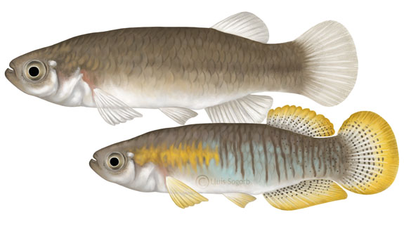

Samaruc

The samarugo (Valencia hispanica) or samaruc (in Valencian) is an actinopterygian, euryhaline fish, native to the still waters and streams of the coastal area of the Mediterranean Sea. It is one of the three species of cyprinodontiformes that are endemic to the Iberian Peninsula, along with the fartet (Aphanius iberus) and the salinete (Aphanius baeticus). Another similar species, the funnel (Fundulus heteroclitus), was initially described in the Bay of Cádiz as Valencia lozanoi and was considered autochthonous to the Iberian Peninsula until its North American origin was verified. The samarugo is included in a group of fish, known colloquially as killies (Cyprinodontiformes oviparos), a group that is widely distributed in tropical and subtropical regions around the globe except for Oceania and Northeast Asia.